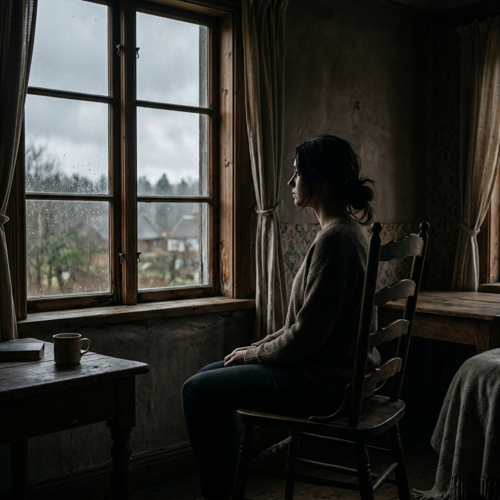

First third
In this initial section of the story, Offred is portrayed as a passive observer/ survivor. Her life was severely disrupted when she lost her husband and her daughter. Offred dealt with these tragedies by detaching herself emotionally. Therefore, Offred is simply trying to survive in Gilead. She does what Gilead tells her to do because she is fearful. Most of the time Offred lives in her head. The few times she escapes are through flash backs of her old life and her interactions with Ofglen.

Second third
As the story unfolds Offred begins to make increasingly larger and riskier steps toward rebellion against Gilead. She engages in secret, and therefore illegal, encounters with the Commander so that they can play Scrabble together. These encounters allow Offred to experience some type of intellectual stimulation and interaction with another person. Through these encounters, Offred becomes aware of Mayday, an underground resistance movement within Gilead. Thus, Offred moves away from being merely a passive prisoner and becomes someone actively breaking the rules of Gilead.
Third/final
In the final section of the story Offred's yearning for both physical and emotional independence reaches its highest point. In order to reclaim control over her body, Offred throws caution to the wind and completely surrenders to her illicit affair with Nick. After the eyes discover their encounter, Offred takes one last courageous leap of faith; she jumps into the back of a black van where she could either be rescued or executed. At the end of the story Offred has moved from being a subjugated prisoner to becoming a woman who is willing to pay the price for hope.